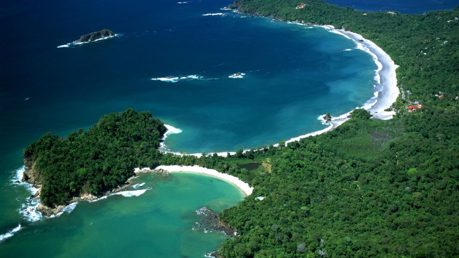
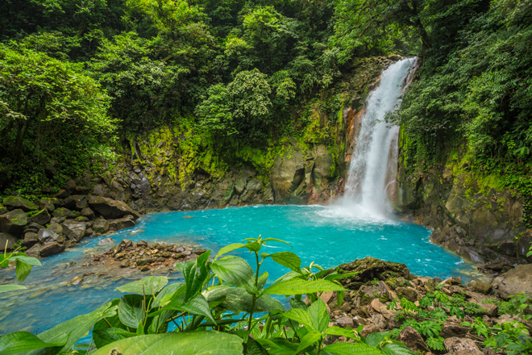

Datos principales:
Extension territorial: 51 100 km²
Moneda: Colón costarricense
Forma de gobierno: Republica presidencialista
Censo (2020): 5 137 000 hab.
Independencia declarada en: 15 de septiembre de 1821 (199 años)
Extension territorial: 51 100 km²
Moneda: Colón costarricense
Forma de gobierno: Republica presidencialista
Censo (2020): 5 137 000 hab.
Independencia declarada en: 15 de septiembre de 1821 (199 años)
Es la capital de la República de Costa Rica y la cabecera de la provincia homónima. Ubicada en el centro del país, específicamente sobre la meseta intervolcánica llamada Valle Central, y contenida en su totalidad por el cantón homónimo. Su zona metropolitana, con aproximadamete 3 000 000 de habitantes, convierte a San José en el centro político, económico y social más importante del territorio costarricense, así como el nudo principal para el transporte y telecomunicaciones.
Costa Rica obtiene su independencia el 15 de septiembre de 1821 y se adhiere a la República Federal de Centroamérica. Sin embargo, el Pacto Federal se disuelve de facto entre 1838 y 1839 y cada provincia declara su independencia. Es en este contexto que Costa Rica se convierte en República en 1848.
Junto con otros países centroamericanos, Costa Rica participa en la guerra contra William Walker en 1856. Durante la batalla de Rivas de Nicaragua, el 11 de abril de 1856, se distingue el Héroe Nacional de Costa Rica, Juan Santamaría.
Desde muy temprano, Costa Rica adopta una política a favor de la enseñanza con el objetivo de garantizar la perenidad de las instituciones democráticas. La enseñanza gratuita y obligatoria se instaura en 1869. El militarismo no prospera, y el funcionamiento del país está solidamente fundado sobre tres poderes claramente definidos. Durante esta segunda mitad del siglo XIX, el país también conoce una transformación económica y social gracias a la expansión de las exportaciones de café y a la institución del sufragio universal en 1889. Los dirigentes adoptan una reforma educativa de influencia liberal que toca a todos los costarricenses, lo cual permite afianzar los pilares democráticos.En 1948, tras la anulación de las elecciones por parte del Congreso, los partidarios del candidato opositor Otilio Ulate lanzan una ofensiva armada, al considerar que eran los vencedores legítimos de la elección. La confrontación civil estalla entre los partidarios de Ulate, dirigidos por José Figueres, y el grupo que apoya al expresidente Calderón Guardia. La confrontación se extiende por pocas semanas, entre marzo y abril, pero marca profundamente al país. Los partidarios de Ulate vencen y José Figueres toma el mando de una Junta Militar que se mantiene en el poder durante 18 meses. Al final de este período, entrega el poder a Otilio Ulate, considerado como el vencedor de las elecciones anuladas en 1948.
Durante el período de la Junta Militar, una nueva Constitución, que conserva la normativa social del período de Calderón Guardia (1940-1944), es adoptada. Esto da nacimiento a la Segunda República, aún vigente el día de hoy. Esta nueva Constitución crea un poder electoral independiente (el Tribunal Supremo de Elecciones), responsable de garantizar la transparencia de las elecciones futuras. Por otra parte, José Figueres decide abolir el ejército, estimando que éste implicaba gastos inútiles y que no garantizaba la estabilidad del país.
Desde hace más de medio siglo, Costa Rica no tiene ejército, apostando así a los instrumentos que el Derecho Internacional proporciona para solucionar los diferendos entre los países. La abolición del ejército ha permitido, en particular, financiar sectores como la educación, la salud y el acceso a los servicios de agua potable y electricidad. Desde 1949, las elecciones se desarrollan regularmente cada cuatro años y la alternancia política es parte de los valores y principios políticos de Costa Rica. El compromiso del país a favor de la paz no armada fue confirmado en 1983, cuando el Presidente Monge declaró la neutralidad perpetua de Costa Rica en los conflictos armados, y dicho compromiso tuvo un alcance internacional muy significativo en 1987, cuando el Presidente Arias recibió el Premio Nobel de la Paz, en el marco de su contribución a la firma de los Acuerdos de Paz en América Central.
Parque Nacional Manuel Antonio: El Parque Nacional Manuel Antonio es una área de conservación natural localizada en la costa pacífica central de Costa Rica, en el cantón de Quepos, provincia de Puntarenas.
Rio Celeste: Esta pendiente se encuentra a las faldas del parque del volcán Tenorio.
Parque Nacional Isla del Coco: Declarada Patrimonio de la Humanidad por la UNESCO, esta paradisiaca isla también es famosa por sus impresionantes fondos marinos, considerados entre los mejores del planeta para practicar buceo, dada la transparencia de las aguas y la facilidad de encuentro con grandes animales marinos, tales como ballenas, tiburones, manta rayas gigantes y delfines azules.